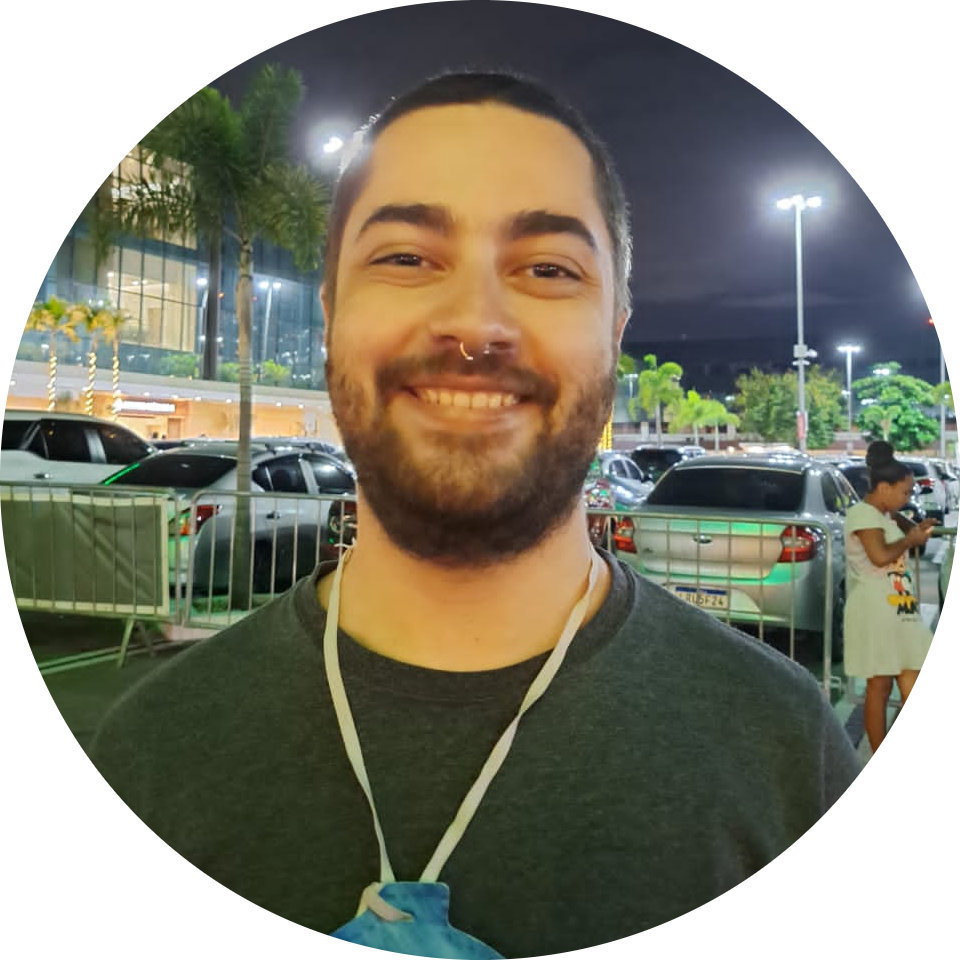

|  |
Marco Antonio Cardoso AlvarezPesquisador e Desenvolvedor em construção respectivamente pelas Universidade Federal Fluminense (UFF) e Cruzeiro do Sul Virtual. No momento sou mestrando em Física na UFF na área de cosmologia. Também estou matriculado no Curso Superior de Tecnologia em Desenvolvimento Mobile na Cruzeiro do Sul Virtual. Se serei pesquisador ou desenvolvedor, só o futuro dirá. |
| Data | Evento |
|---|---|
| 2012-2014 | Ensino Médio pela Escola Nossa Senhora das Mercês |
| 2018-2022 | Graduação em Física-Bacharelado pela UFF |
| 2022-2024 | Mestrado em Física na UFF |
| 2022 | Conceito C1 obtido no teste TOEFL ITP |
| 2023-2024 | Curso Superior de Tecnologia em Desenvolvimento Mobile na Cruzeiro do Sul Virtual |
| 2023 | The Complete JavaScript Course 2023: From Zero to Expert! |
| 2023 | The Complete 2023 Web Development Bootcamp |
| Desenvolvimento Web | ⭐ |
| Desenvolvimento Mobile | |
| Física | ⭐⭐⭐ |
| Jogos eletrônicos | ⭐⭐⭐⭐ |